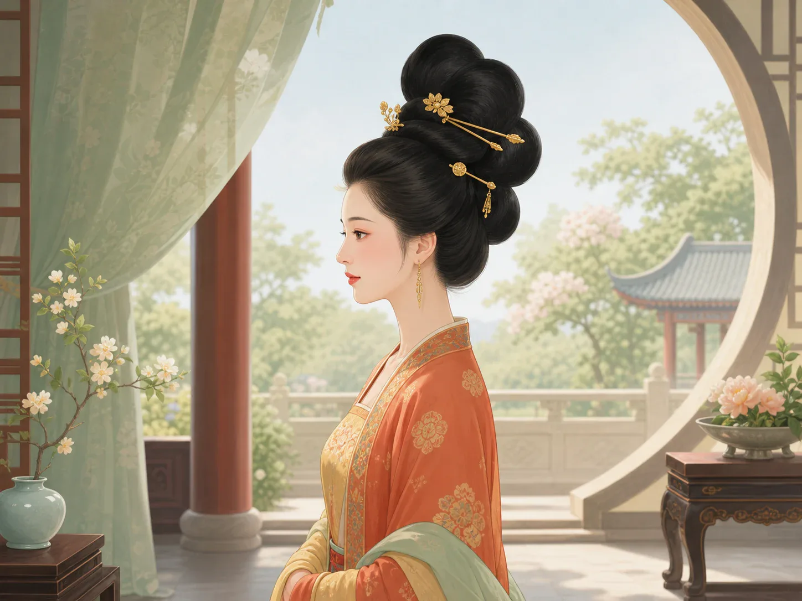
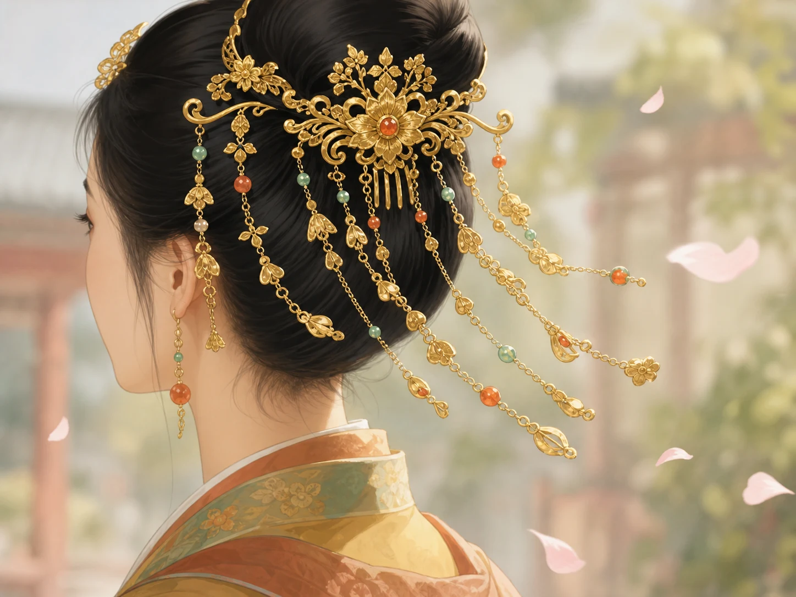
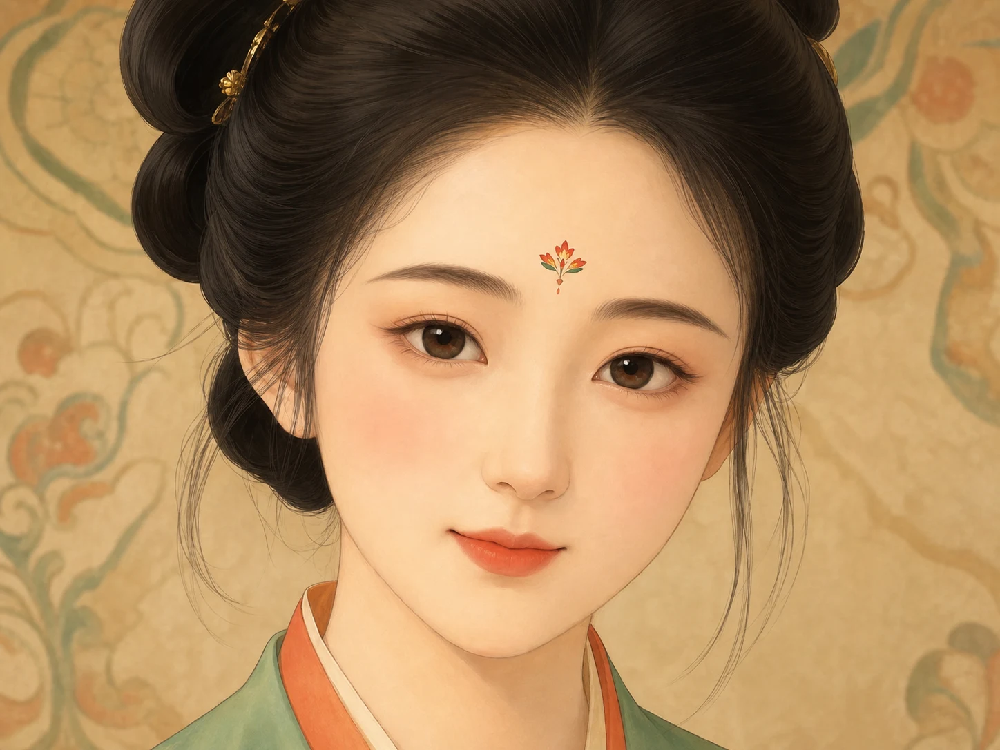

云鬓花颜：唐朝女子的发髻与金钗
Tang Women: Cloud-High Hair and Golden Hairpins
Page 1
头发像一朵云一样高高堆起来
The Hair Could Rise Like a Cloud

Tang women could build their hair high and full, so from far away it looked almost like a cloud.
唐朝女子很会梳头。
她们不只是把头发扎起来，而是会把头发做成高高的发髻。
有的往上堆，有的往后翻，从侧面看很像云、花，或者一只正准备转身的小鸟。
所以很多人一看到唐朝发式，就会先想到一个字：高。
Tang dynasty women were very skilled at styling hair.
They did not only tie it up. They built it into tall hair buns.
Some rose upward. Some folded backward. From the side, they could look like clouds, flowers, or a bird about to turn around.
That is why many people think of one word first when they see Tang hairstyles: high.
Page 2
头上的金步摇，会跟着人一起轻轻摇
Gold Buyao Moved Gently with Every Step

A gold buyao was not stiff. It swayed gently as the wearer walked.
发髻梳好了，还要往上插东西。
最漂亮的一种，叫步摇。
它不是一根不会动的钗子，而是会随着走路轻轻晃动。
所以一个人还没说话，头上的金光和小珠子就先开始讲故事了。
After the hair bun was finished, people still added ornaments.
One of the prettiest was called a buyao.
It was not a stiff pin. It moved gently when the wearer walked.
So before a person even spoke, the gold shine and little dangling pieces above the hair had already started telling a story.
Page 3
额头上还有一朵小花
There Could Even Be a Tiny Flower on the Forehead

A tiny huadian between the brows could add one more point of brightness to the whole face.
唐朝女子有时候还会在额头上贴一个小小的装饰，叫花钿。
它可能是一朵小花，也可能只是一个小点。
东西虽然很小，可是因为它正好在眉心，所以别人一眼就会注意到。
连额头中间这么一点点地方，唐朝人也不肯让它安安静静地空着。
Tang women sometimes placed a tiny decoration on the forehead called a huadian.
It might look like a little flower, or sometimes only a small dot.
Even though it was tiny, people noticed it right away because it sat between the brows.
The people of the Tang dynasty did not even want to leave that tiny space in the middle of the forehead plain and quiet.
Page 4
她们不是只在打扮自己
They Were Not Only Decorating Themselves
高高的发髻、会晃的步摇、额头上的花钿，看起来都很热闹。
这些东西合在一起，不只是“好看”，还会让人觉得这个时代很自信、很明亮。
好像连头发和额头都在说：我们喜欢热闹，也喜欢美。
Tall hair buns, swaying buyao, and little huadian all make the style feel lively.
Together, they do more than look beautiful. They also make the whole age feel confident and bright.
It is almost as if the hair and forehead are both saying: we like life to feel lively, and we like beauty too.
小结
In Summary
唐朝女子会把头发梳得像云一样高，再插上会摇动的金步摇，额头上还可能有一朵小小花钿。她们装点的不只是自己，也把那个时代的明亮和热闹梳到了头上。
Tang women could pile the hair high like a cloud, add gold buyao that swayed with movement, and place a tiny huadian on the forehead. They were decorating more than themselves. They were also combing the brightness and liveliness of their age onto the top of the head.